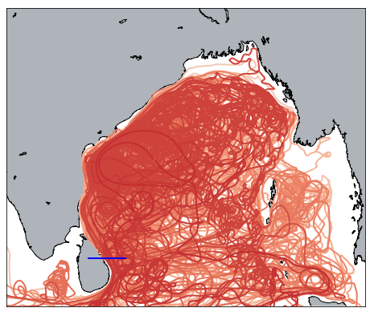
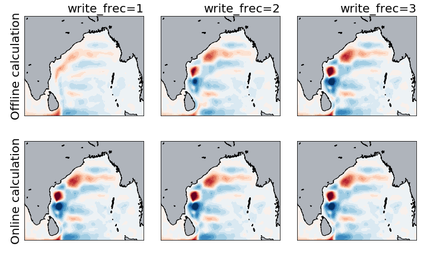

The ROMS data is defined on the same grid as the TRACMASS grid. Therefore, there is no need to interpolate velocities or tracer on the TRACMASS grid. However, ghosts u and v points are defined around the frame to adjust to the TRACMASS grid. The default setup of this project initialises trajectories west of Sri Lanka only for northward fluxes (solid blue line). The seeding takes place every month (12 seeding steps) and one trajectory is initialised in the location. Trajectories are terminated when exiting the ROMS domain, the maximum time for trajectories is 100 years.

TRACMASS features: online/offline calculation of stream functions (l_offline)
Stream functions can be calculated in two ways in TRACMASS either online (l_offline=FALSE), while trajectories are computed, or offline (l_offline=TRUE) as a part of the postprocessing of the results. The online case is the same regardless of the choice of write_frec. However, for the offline case the choice of write_frec is relevant. For low writing frequencies write_frec=1 and write_frec=2 the online calculation is less accurate. The figure below shows an example of different calculations of the barotropic stream function for different writing frequencies.

Offline calculation of stream functions may give a wrong result for write_frec=1 and write_frec=2. For an accurate calculation of stream functions use write_frec=3 or write_frec=4 or an online calculation.